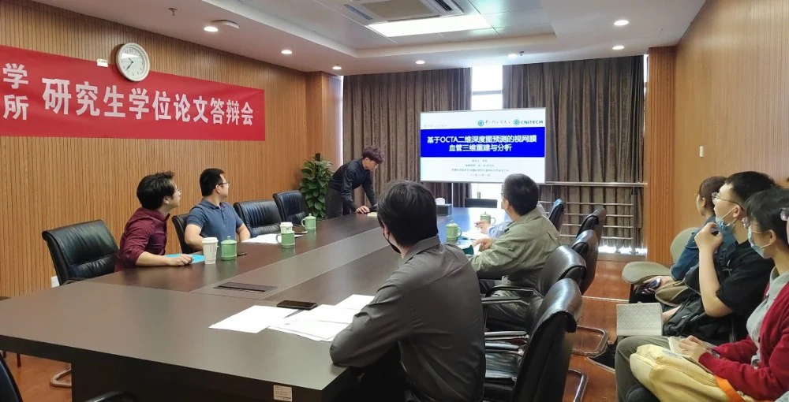
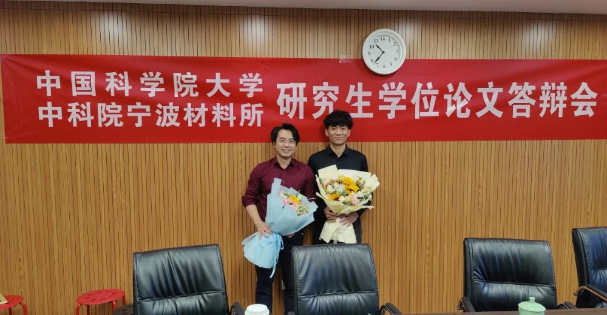

恭喜郁帅同学顺利完成毕业答辩
2022年5月24日，我组2019届硕士研究生毕业论文答辩会在3002顺利举行。出席本次会议的有我组团队负责人赵一天老师、副研究员张炯老师，来自纳米生物材料组的杨方老师，以及特别邀请来自宁波眼科医院的易全勇主任担任本次答辩委员会主席。部分研二学生及易主任团队成员旁听了本次答辩会。

本次答辩会议首先由答辩学生郁帅同学从论文研究背景、研究意义、研究内容、研究结论等方面，对研究生学习期间的研究成果进行总结陈述。其次，答辩委员和答辩主席针对答辩学生的陈述情况及论文全文提出答辩学生需要回答的问题。郁帅同学虚心听取每一位评委老师提出的意见，并就评委提出的问题作出认真的回答。最终，经各答辩委员会投票表决，一致同意郁帅同学硕士通过毕业答辩，建议授予工程硕士学位。整个答辩过程紧张激烈，公平公正，组织有序，严格规范，充分展现了我组研究生深厚的学术功底和答辩评委严谨治学的风范。
会议最后郁帅同学对iMED团队所有老师和同学表达了诚挚的感谢。他说：“能加入这个大家庭与大家相遇是一件幸运的事，今后的生活难免会遇到困难和不如意，每当那样的时候，我想我一定会想起这三年的科研生活。如果你问我这三年最大的收获是什么，我无法说得特别具体，但脑海里会马上浮现一些画面：刚接触新的领域手足无措的时候，曾经一次次因为实验结果差而垂头丧气转而又说服自己继续振作的时候，想到了一个解决问题的办法迫不及待想去尝试的时候，为了赶deadline熬大夜的时候......正是有这一次次失败但不放弃的经历，让我在未来的日子能有克服困难的决心的勇气。感恩这一段旅程，感谢这个让我们都觉得未来仍有无限可能的地方。”
在这里，我们也祝愿郁帅师兄在往后的日子里前程锦绣，所行皆坦途，所遇皆良人！

作者：白艳苗